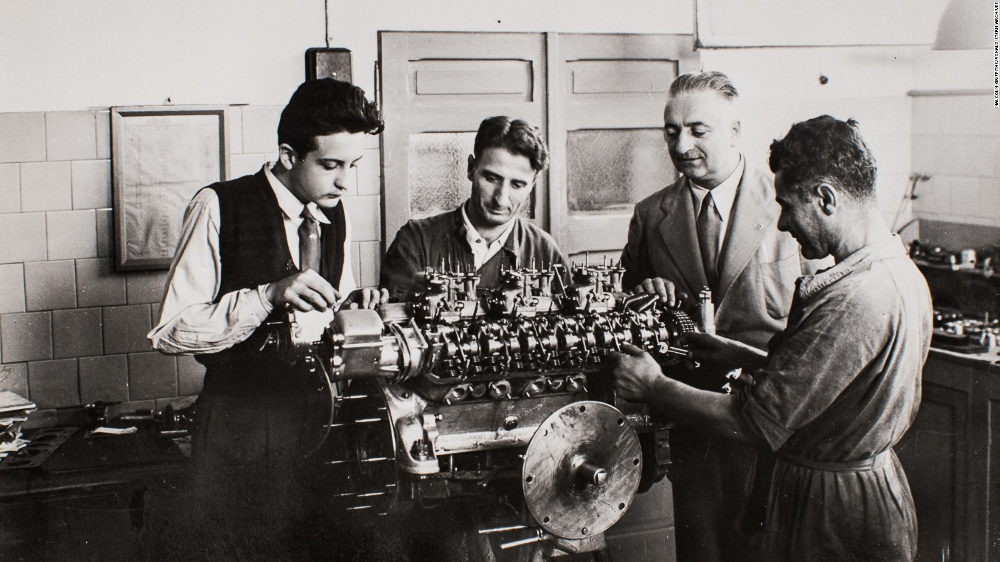
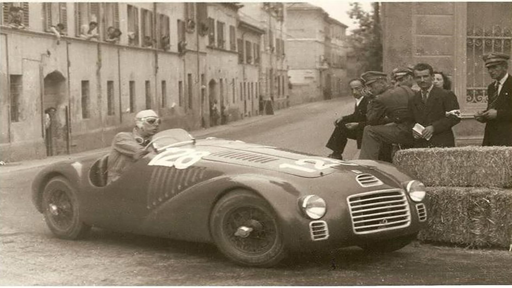
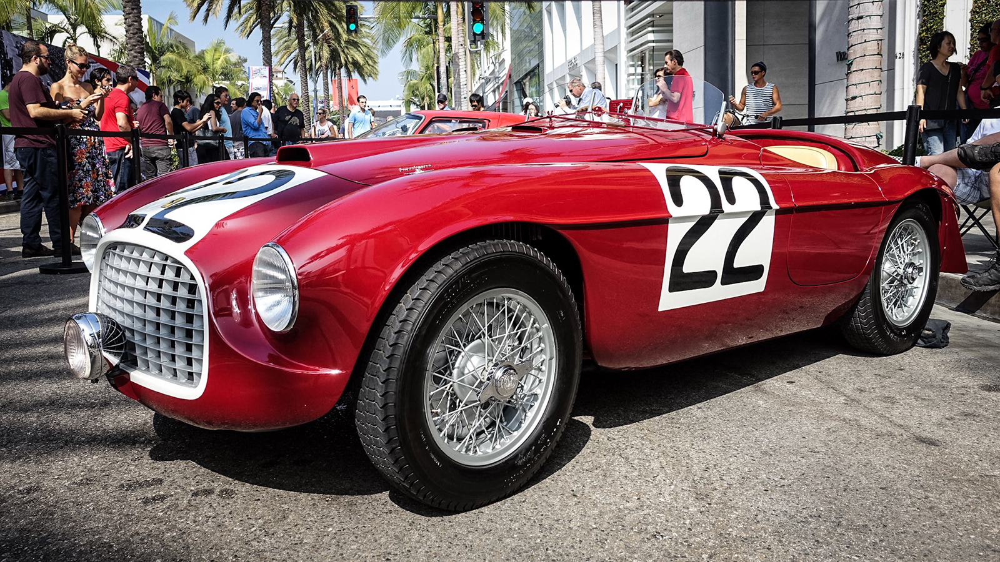
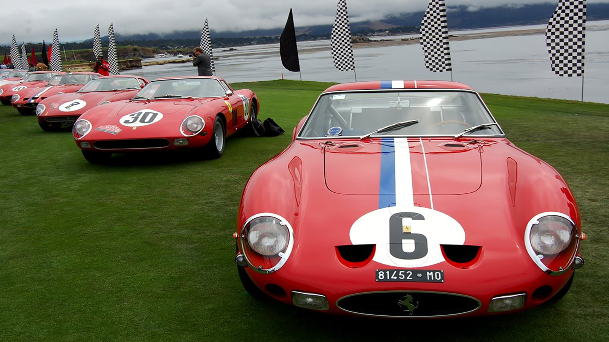
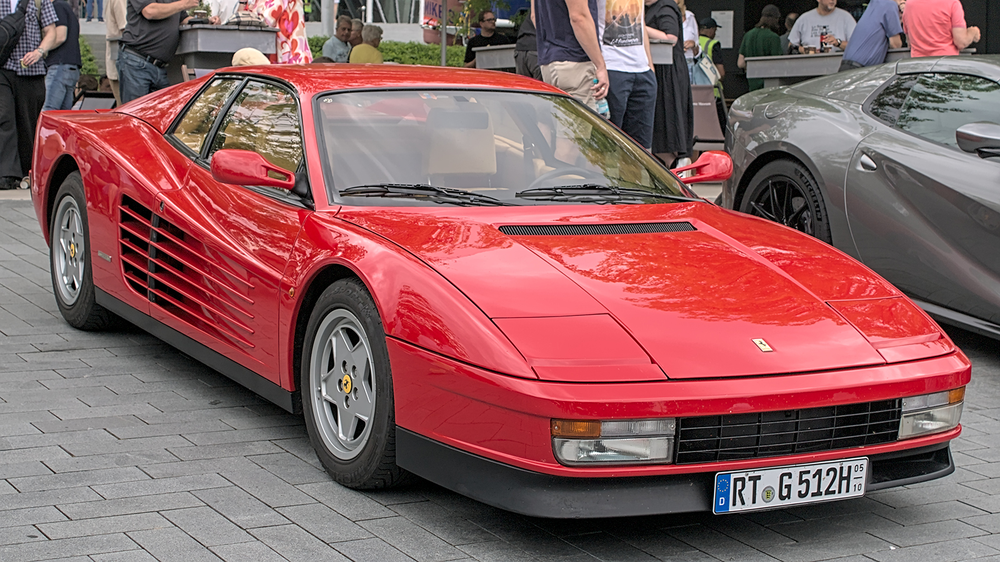
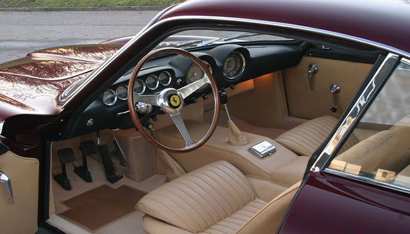
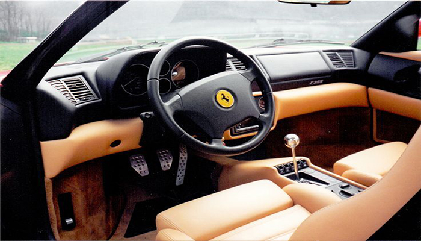
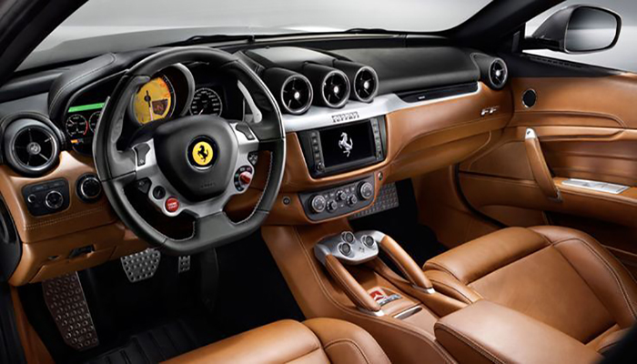
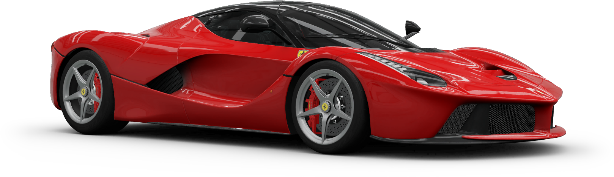
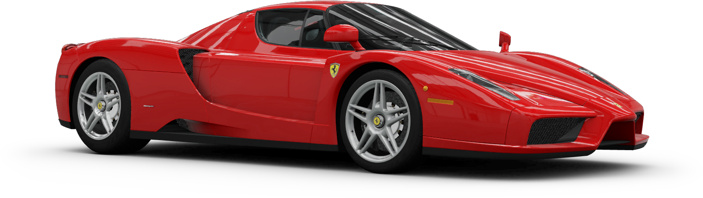

Ferrari...
Is Passion..
In Motion...
Born from Enzo Ferrari's obsession with victory, the prancing horse rose from Maranello in 1947 and never looked back. Every championship, every roar, every road car carries that same fire: speed, forged into legend.





From hand-stitched leather cockpits built purely for the driver to digital, tech-forward cabins, Ferrari interiors have evolved without ever losing their racing soul




Because This Represents Who We Are

To Honor His Name